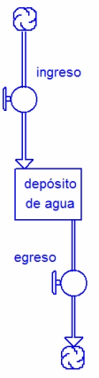
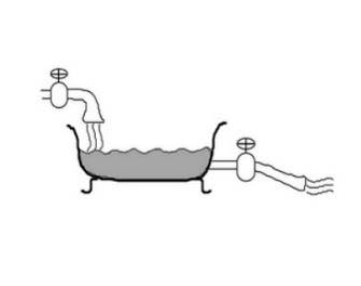
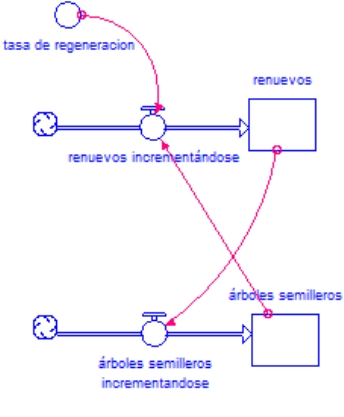

La dinámica de
sistemas y los modelos computacionales para representarlos se basan
en diagramas donde los principales componentes gráficos (y de
conceptos) de flujos y acumulaciones son las piezas fundamentales
para su construcción. A veces es algo dificultoso distinguir
entre ambos elementos. En principio puede decirse que los stocks
representan entidades físicas que pueden acumularse, por
ejemplo y en relación al CLD de árboles semillero -
renuevos, estos dos pueden considerarse como stocks, los
árboles se acumulan en el bosque. Los flujos son aquellas
variables que producen cambios en los stocks, en este caso
corresponde a los renuevos o árboles que se incrementan a cada
instante de la simulación. Una forma de distinguir entre
stocks y flows es preguntarse que pasaría si congelamos el
tiempo y observamos el proceso. Si aún es posible visualizar
algún valor distinto de cero para una variable, entonces es un
stock, pero si no puede ser medido entonces esa variables es un
flujo. Un flujo ocurre sobre un período de tiempo, y en un
instante en particular nada se mueve.


COMO CONSTRUIR
NUESTRO PRIMER MODELO DE SIMULACIÓN